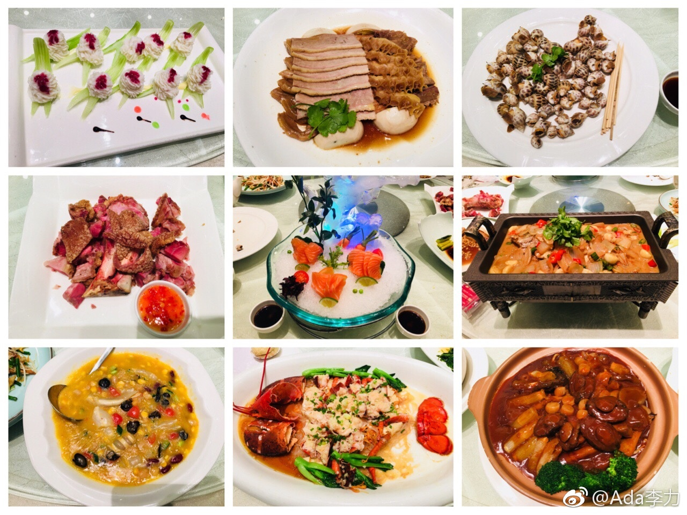

前几年春节都是在北京呆着。这次来上海是姐姐又催又骂的结果。自己能随心所欲行事，也是因为爸妈一直对子女没太多要求。所以春节期间几个子女都是爱干嘛干嘛。往往是借妹妹回国契机，大家才聚齐热闹下。
家人聚在一起吃吃喝喝确实挺好的，我也得克服下假期越来越宅的倾向。
这次跟姐姐弟弟聊起来合力做事情的优势。只是我们四个孩子，在四个完全不同的行业，而且分布在几个城市，想要合力做些事情，障碍还是蛮多的。
家人聚在一起吃吃喝喝确实挺好的，我也得克服下假期越来越宅的倾向。
这次跟姐姐弟弟聊起来合力做事情的优势。只是我们四个孩子，在四个完全不同的行业，而且分布在几个城市，想要合力做些事情，障碍还是蛮多的。
- 